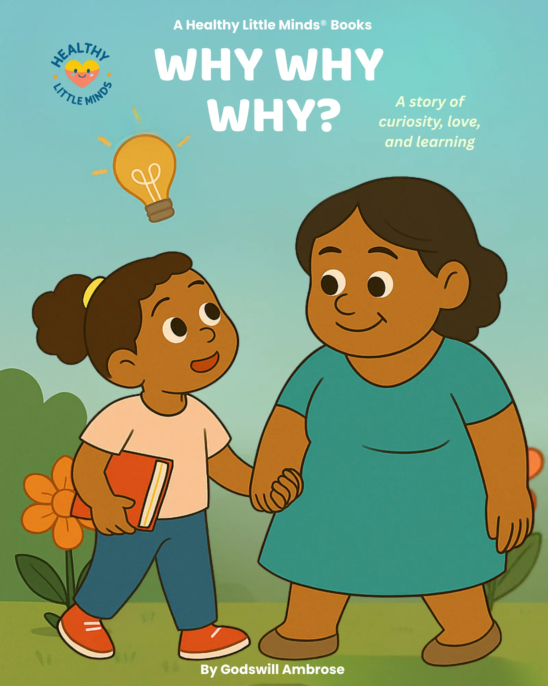

Observe
Look closely, listen, and notice what changes or stays the same.
Explore a feeling
Curiosity is the feeling that makes us wonder, notice, and ask questions. It helps children learn about themselves, other people, and the world.
Look closely, listen, and notice what changes or stays the same.
Good questions begin with why, how, what, or what if.
Ask an adult before exploring anything private, risky, or unfamiliar.

A gentle story about the power of asking why.
Read the book
A story about pausing and listening to what feelings are saying.
Read the book